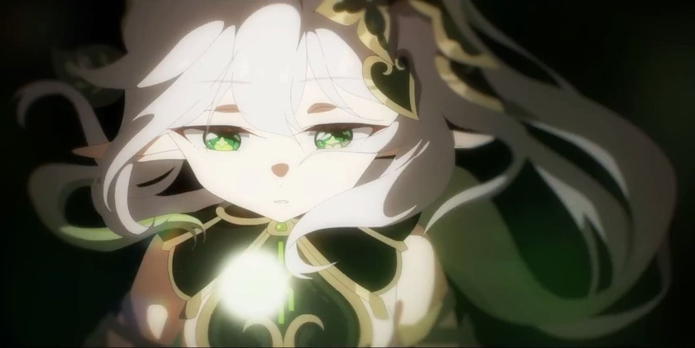
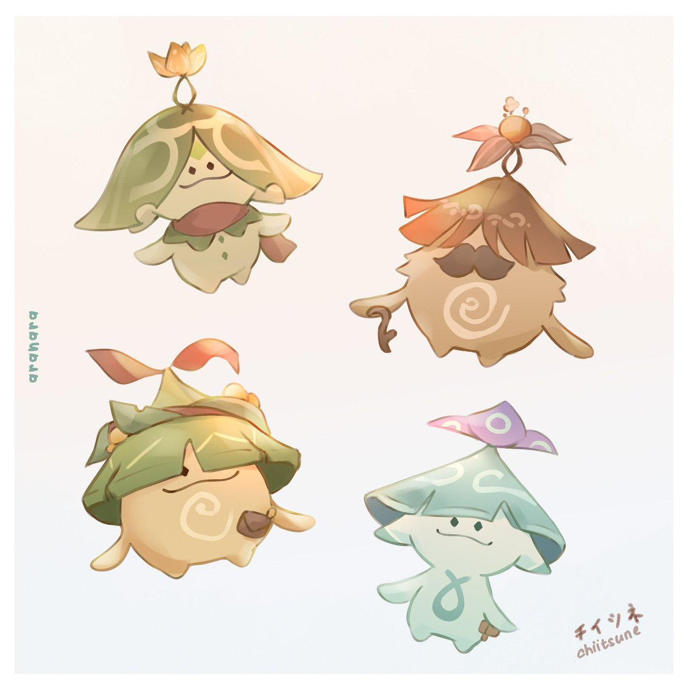
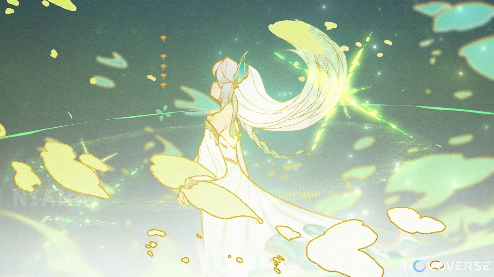

About the Dendro Archon
Lesser Lord Kusanali watches over and protects the people of Sumeru. Though they may have forgotten her, she will never abandon them.
Kusanali's Familiars
The Aranara are children of the forest. Their power comes from dreams and memories.


Home: Vanarana
Nahida's Traits
- Childlike
- Curious
- Speaks in metaphors
- Uses the word "dookie"
Nahida's Friends
The Traveler teamed up with Nahida to investigate the Sages' wrongdoings in Sumeru. Nilou and Dunyarzad are supporters of Lord Kusanali. Nilou performed a dance in her honor. Click on the links to learn more about them.
Nahida's Enemies
The Sages are endangering citizens by harvesting dreams for nefarious purposes. Il Dottore is an outcast who was expelled from the akademiya, but has returned the city and up to no good. He is working on transforming Scaramouche, the Balladeer, into a new god.
Greater Lord Rukkhadevata and the Scarlet King
The Scarlet King and Greater Lord Rukkhadevata are believed to be enemies, but in actuality they were allies. The King sacrificed himself to put a stop to a terrible sickness that fell over the world. When his efforts proved to not be enough, Rukkhadevata used up all of her power to seal the darkness. She then reverted to the form of a small child. This child is our dear Lord Kusanali.
This website was created to practice HTML & CSS. ©Beth